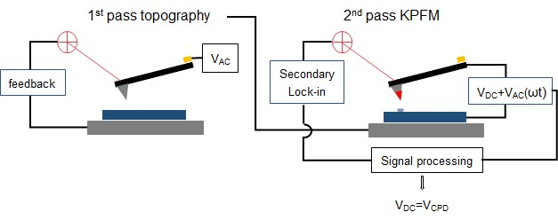

|
实现方式
|
KPFM 模式采用双通道测量方式，使用提升模式以最小化串扰，类似于 MFM 或 EFM 测量。在第一通道中，使用轻敲模式和主锁相放大器记录形貌。在第二通道中，悬臂梁不再被机械激励振动。交流电压 VAC(ωt) 施加在样品和探针之间。由于电力的作用，悬臂梁开始以 ω 频率振动，信号由次级锁相放大器分析，提供幅度。为了搜索使悬臂梁幅度达到最小值的 VDC 值，VDC 电压以 100 Hz 进行调制（默认值）。

图 1：KPFM 测量原理
这种实现方式也称为 KPFM-AM。KPFM-AM 的优点是灵敏度较高，但会牺牲可实现的分辨率。这是因为不仅探针对测量有贡献，整个悬臂梁也有贡献。